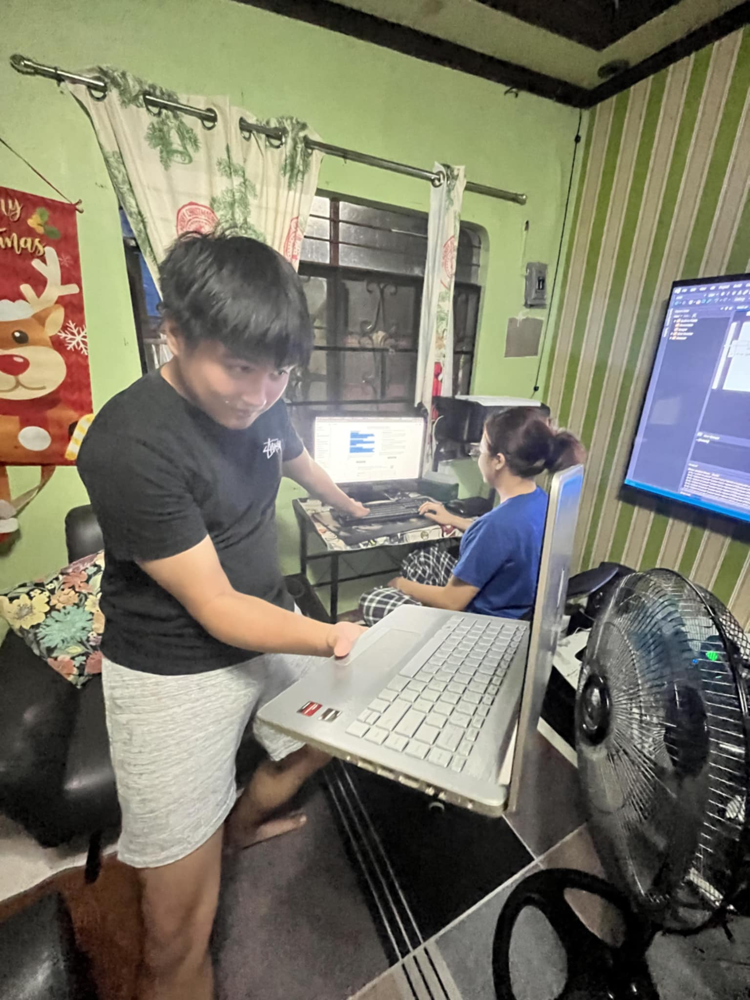

Working in a team environment taught me valuable skills beyond coding. Communication and collaboration were key to successfully completing group projects.
We faced challenges like miscommunication, delays, and clashing ideas. But through those experiences, I learned how to listen actively, adapt to different working styles, and contribute meaningfully.
Group projects helped me grow not only as a developer but also as a team player—something that’s essential in the real-world tech industry.